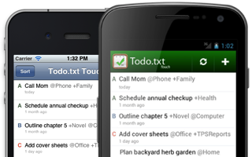

If you have a file called todo.txt on your computer right now, you're in the right place.
So many power users try dozens of complicated todo list software applications, only to go right back to their trusty todo.txt file.
But it's not easy to open todo.txt, make a change, and save it—especially on your touchscreen device and at the command line. Todo.txt apps solve that problem.
Simplicity is todo.txt's core value.
You're not going to find many checkboxes, drop-downs, reminders, or date pickers here.
Todo.txt apps are minimal, todo.txt-focused editors which help you manage your tasks with as few keystrokes and taps possible.
On Your Phone and Tablet

Your todo.txt file isn't useful if it's not always at your fingertips. The Todo.txt mobile apps make it easy to view and update your tasks on the go.
Currently connected to Dropbox, Todo.txt Touch helps you manage your todo.txt on your touchscreen mobile device and automatically syncs your changes to all your computers.
iPhone, iPod touch, and iPad users:
Android users:
Also available in the Amazon Appstore.
At the Command Line
With a simple but powerful shell script called todo.sh, you can interact with todo.txt at the command line for quick and easy, Unix-y access.
The Todo.txt CLI supports archiving completed tasks to done.txt and priority/context tab autocompletion.
Find out more:
- Documentation—everything you need to know about how to use Todo.txt CLI
- Mailing List—ask the Todo.txt community
In Any Text Editor
Countless productivity apps and sites store your tasks in their own proprietary database and file format. But you can work with your todo.txt file in every text editor ever made, regardless of operating system or vendor.
The todo.txt format is a simple set of rules that make todo.txt both human and machine-readable. The format supports priorities, creation and completion dates, projects and contexts. That's all you need to be productive. See an example Todo.txt file.
What Users Are Saying
The easiest to-do list I ever used. -Dennis
Brilliant... the "cool" factor is off the charts. -John
So simple, yet also very versatile and flexible. I love it! -mschooler93
Extremely useful and well executed. -nemof
No frills, highly effective and convenient. -Will
Developers
Todo.txt CLI and Todo.txt Touch are proudly open source. Browse the source code for the CLI, iOS, and Android.
Community Apps: Todo.txt on your favorite device or platform.
In addition to the official Todo.txt apps, community members have built more apps and add-ons that work with Todo.txt.
Desktop
Todotxt.net
A minimalist, keyboard-driven Windows GUI for your todo.txt file, by Ben Hughes.
Todo.txt Chrome App
Standalone, offline-ready Chrome app for your todo.txt file - works across Windows, Mac, Linux and Chrome OS, by Aditya Bhaskar.
TodoTxtMac
TodoTxtMac is a minimalist, keyboard-driven to-do manager for Mac OS X (10.8 Mountain Lion and higher), by mjdescy.
Todour
Todour is an application for handling todo.txt files on the Mac and Windows, by Sverrir Valgeirsson.
DoStuff
"A todo.txt client for humans" on Ubuntu (screenshots and video clip), by ximilian.
DayTasks
A fast, simple, and efficient todo.txt-compatible task list for Ubuntu, by Zach Burnham.
QTodoTxt
A fast, cross-platform todo.txt GUI written in Python, by Matthieu Nantern.
jdotxt
An open-source, Java-based client for Windows, Mac OS X and Linux, by Christian M. Schmid.
Web
Todotxttdi.com
HTML5 Dropbox app with text-driven user interface (source), by David Pratten.
TodoTxtJs
Interactive HTML5 todo.txt app with optional Dropbox integration (source), by Martin Gill.
todoTxtWebUi
A web UI to use with a todo.txt file (demo), by Jason Holt.
Bulldog
HTML5 task manager, built on todo.txt, by Davis W. Frank.
Todo.txt++
A sleek, hosted, mobile-friendly web app with Dropbox synchronization, filtering, and searching. You can use it here
Todo.txt Chrome Extension
Chrome browser extension to manage your todo.txt file by Aditya Bhaskar.
Plugins and Add-ons
Vim plugin for todo.txt
by Leandro Freitas.
#todo.txt IFTTT Recipe
Add items to your todo.txt file in Dropbox from Google Chat, by Nick Barrett.
Todo.sh Add-on Directory
A collection of add-ons, custom actions, and filters that enhance the Todo.txt CLI script, authored by community members.
Sublime Text todo.txt syntax highlighting
by Cthulhux
Todo.txt Thunderbird Extension
Mobile
Todo.txt for Windows Phone 7
Todo.txt for Windows Phone 7 is a task manager based on the todo.txt file format, by E.Z. Hart.
Todo.txt Enyo
A webOS application for managing your todo.txt file written using the EnyoJS framework, by thrrgilag.
Simpletask
Powerful todo.txt app for Android, by Mark Janssen. Also available in a cloudless version.
Developer Tools
Todo.txt Gem
A RubyGem for parsing todo.txt files, by Sam Rose.
Text::Todo
Perl interface to todotxt files by Andrew Fresh.